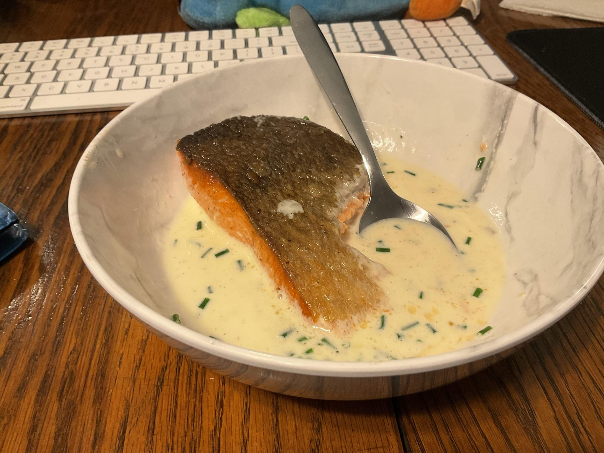
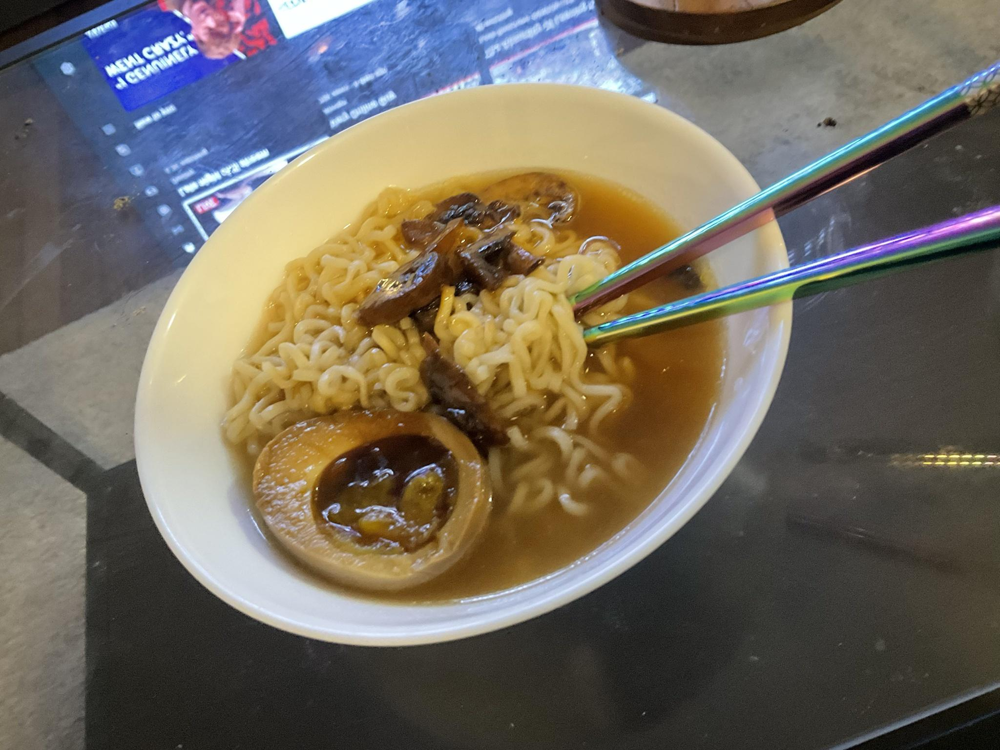

A colombian style cheese bread that comes ready made to put directly into the oven from the freezer. Tried a little honey mustard with one but they're great on their own! Must get more next time I go out for specialty ingredients.

This was a shot in the dark since I've never made crispy skin salmon ever but I fuckin NAILED it! could've used more salt since I was much too skiddish with the seasoning this time around but there will absolutely be a next time!

Atop a bed of ramen noodles lays a sprinkling of lightly caramelized mushrooms that are paled by the luxuriously even brown color the egg, that was marinated 3 days in a mirin soy bath, has taken on. All the way through to the semisoft liquid core yolk itself is an umami the likes of which you must expirience for yourself. The egg alone makes this particular cheap meal that much more hearty, and thus simply priceless to my mind body and soul.